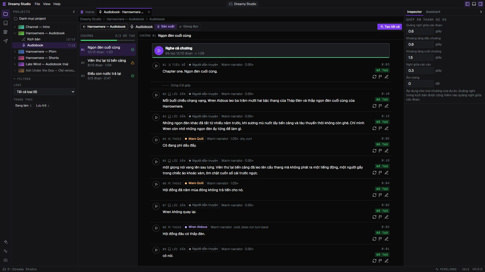
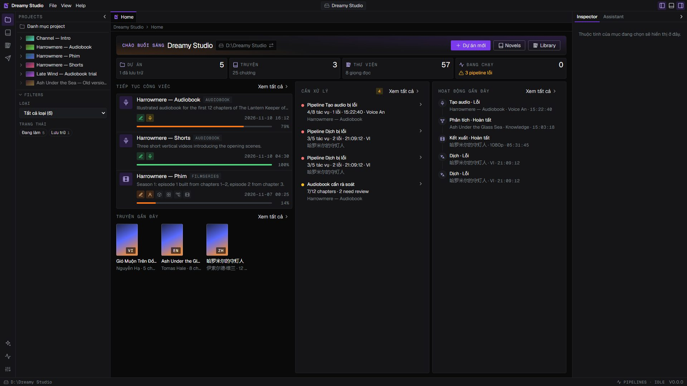
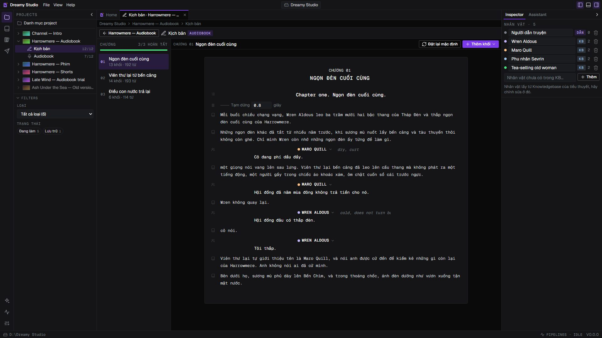
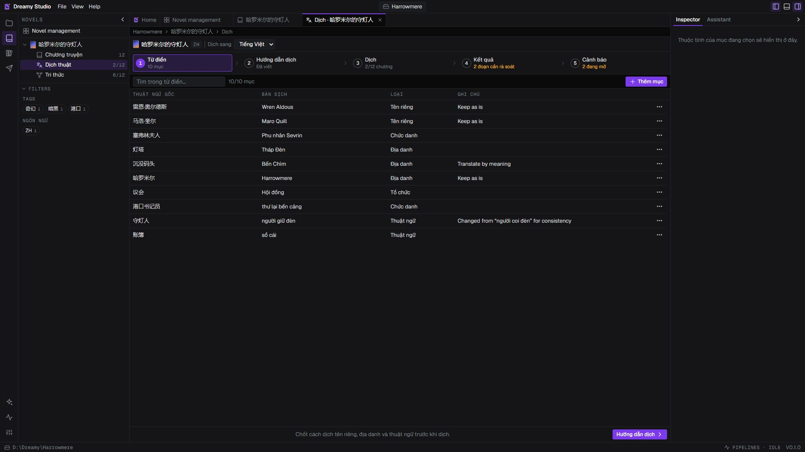
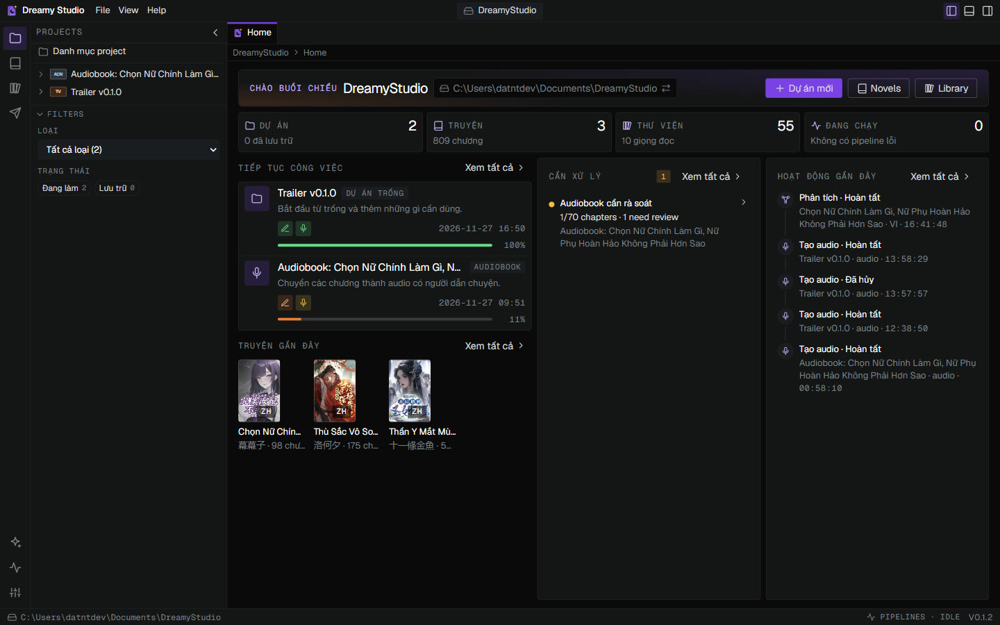
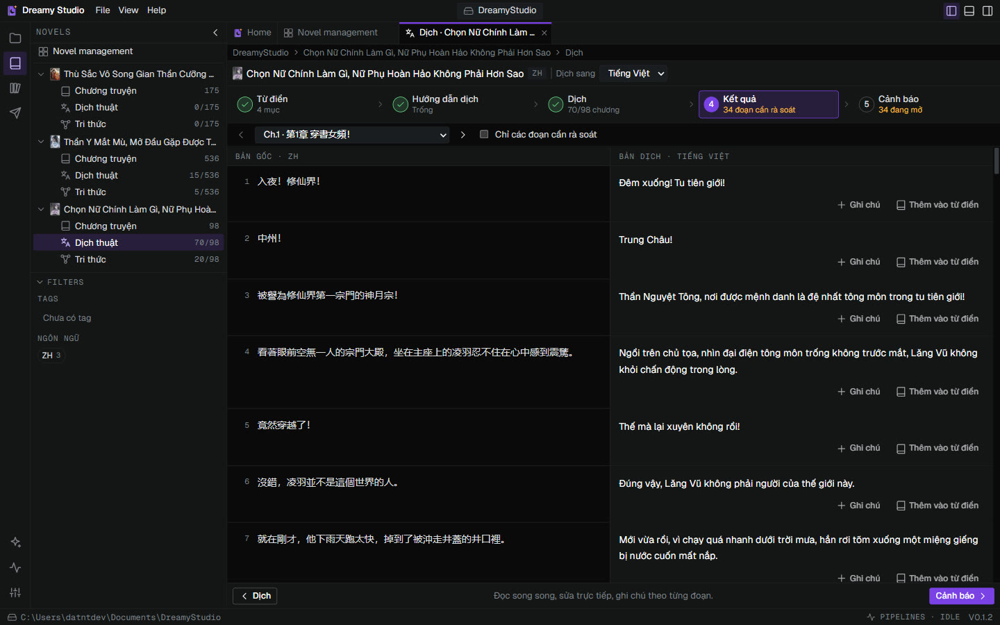
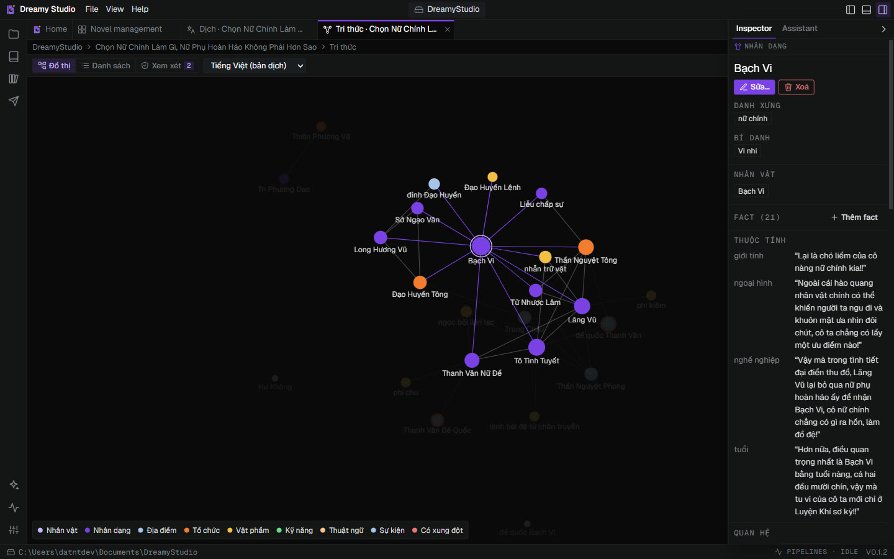
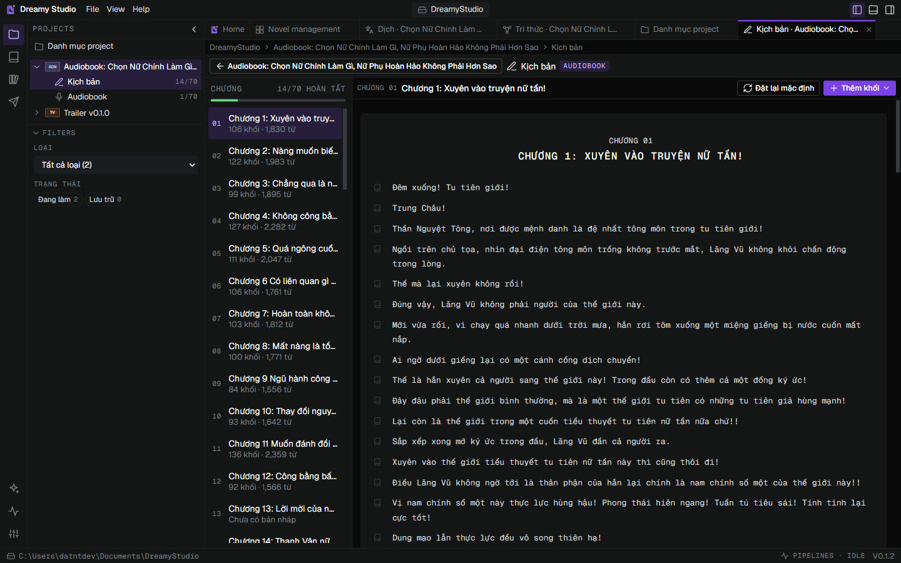
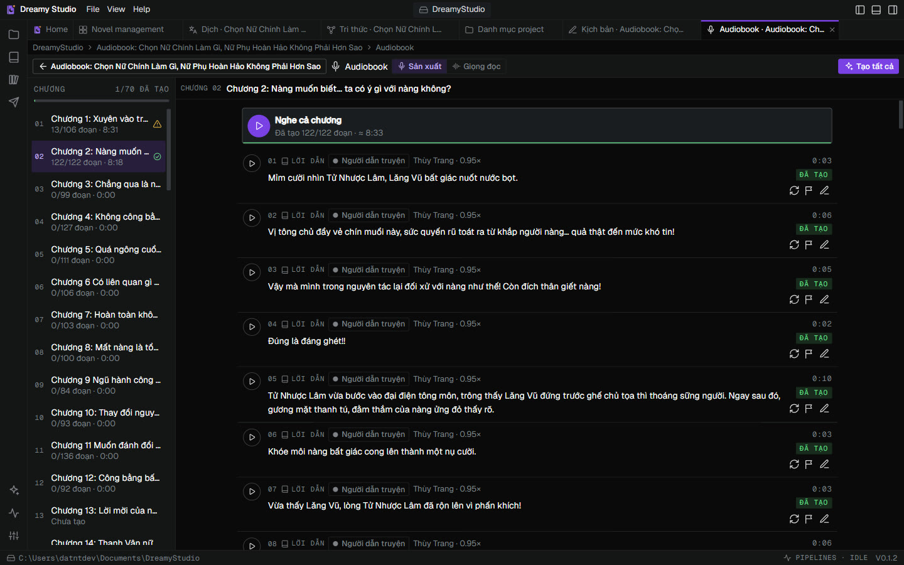
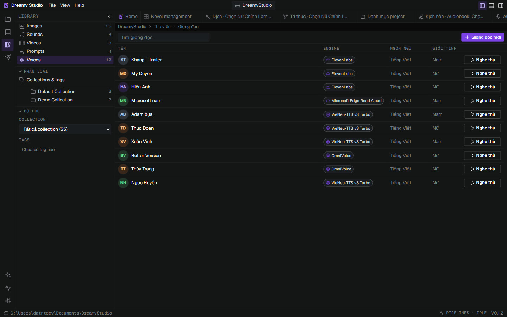

Pipelines
Dịch, phân tích và tạo audio chạy nền, có hàng đợi, giới hạn đồng thời, nút hủy và log cho mỗi lần chạy.
Dreamy Studio gom các công đoạn dịch, phân tích tri thức, viết kịch bản và sản xuất audiobook vào một studio desktop. Dữ liệu dự án nằm trên máy tính của bạn, chạy tốt cả trên phần cứng khiêm tốn.

Quy trình
Mỗi công đoạn dùng lại kết quả của công đoạn trước: từ điển và tri thức giữ cho bản dịch nhất quán, kịch bản và danh sách nhân vật quyết định giọng đọc.
Nhập, đọc và chỉnh sửa tiểu thuyết theo chương trong workspace cục bộ.
Dịch bằng LLM với từ điển, hướng dẫn và cảnh báo để rà soát.
Trích xuất nhân vật, sự kiện, bằng chứng và kiểm tra tính nhất quán.
Soạn kịch bản từng chương, phân vai và gán giọng cho nhân vật.
Tổng hợp giọng nói cục bộ, nghe duyệt và xuất kèm phụ đề SRT.
Tiếp theo: storyboard, canvas, dựng video và phân phối — xem phần Sắp ra mắt
Công cụ trong ứng dụng
Ảnh chụp từ giao diện thật của Dreamy Studio với dữ liệu mẫu, đổi theo giao diện sáng hoặc tối của bạn.






Dịch, phân tích và tạo audio chạy nền, có hàng đợi, giới hạn đồng thời, nút hủy và log cho mỗi lần chạy.
Ảnh, âm thanh, video và prompt với bộ sưu tập, tag và xem trước ngay trong app.
TTS cục bộ tự nhận GPU NVIDIA, tải CUDA runtime và model ngay trong phần Cài đặt. Hoặc dùng ElevenLabs với API key của bạn, Microsoft Edge Read Aloud miễn phí.
Hình ảnh
Ảnh chụp từ một workspace thật đang làm audiobook cho tiểu thuyết tiếng Trung. Bấm vào ảnh để xem kích thước gốc.






Sắp ra mắt
Các module dưới đây đã có trong định hướng sản phẩm và một số đã có chỗ trong giao diện app, nhưng chưa dùng được ở bản 0.1.0. Hiện chưa có mốc thời gian; thứ tự và phạm vi có thể thay đổi.
Template Filmseries: viết kịch bản phim nhiều tập bên cạnh kịch bản audiobook.
Ảnh tham chiếu cho từng nhân vật để giữ hình ảnh nhất quán.
Dựng thế giới ba chiều bằng các mô hình đất sét làm bối cảnh.
Chia cảnh và vẽ các khung hình trước khi sản xuất.
Quy trình dạng canvas để tạo hình minh họa và tài nguyên chất lượng cao.
Tạo hình minh họa bằng dịch vụ cloud với API key của bạn. Giọng đọc cloud (ElevenLabs, Edge Read Aloud) đã có từ bản 0.1.0.
Ghép tài nguyên đã tạo trong dự án và xuất thành video hoàn chỉnh.
Chuẩn bị và đưa sản phẩm hoàn chỉnh lên các nền tảng phân phối. Hiện mới ở mức định hướng, chưa có thiết kế chi tiết.
Chạy trên máy của bạn
Cài đặt
Dreamy Studio chạy trên Windows 10/11 64-bit. Tài liệu hướng dẫn từng bước tải bản mới nhất, mở app và cài đặt ban đầu.
Lưu ý